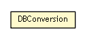

se.cambio.cds.model.util.conversors
Class DBConversion

java.lang.Object
 se.cambio.cds.model.util.conversors.DBConversion
se.cambio.cds.model.util.conversors.DBConversion
public class DBConversion
- extends Object
- Author:
- iago.corbal
Contains utility methods to convert objects from/to DB
| Methods inherited from class java.lang.Object |
clone, equals, finalize, getClass, hashCode, notify, notifyAll, toString, wait, wait, wait |
DBConversion
public DBConversion()
toShort
public static Short toShort(Boolean valor)
toBoolean
public static Boolean toBoolean(Short valor)
toCalendar
public static Calendar toCalendar(Timestamp fecha)
toTimestamp
public static Timestamp toTimestamp(Calendar fecha)
toDate
public static Date toDate(Calendar fecha)
toCalendar
public static Calendar toCalendar(Date fecha)
toString
public static String toString(Character value)
toChar
public static Character toChar(String value)
toDouble
public static Double toDouble(BigDecimal value)
toLong
public static Long toLong(BigDecimal value)
toBigDecimal
public static BigDecimal toBigDecimal(Long value)
toSQLArrayString
public static <E> String toSQLArrayString(Collection<E> objects)
Copyright © 2013 Cambio. All Rights Reserved.